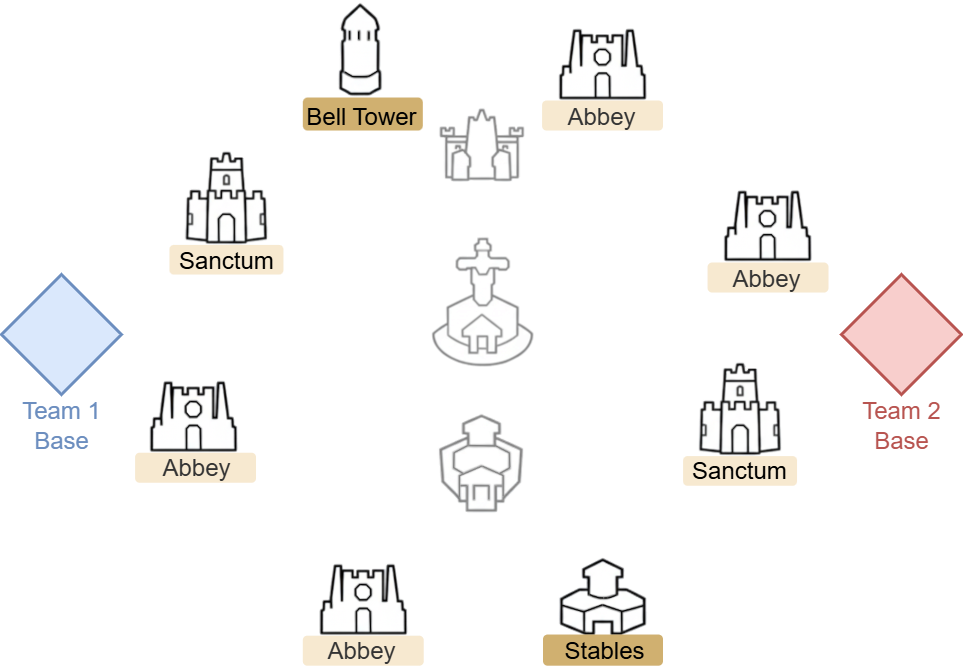
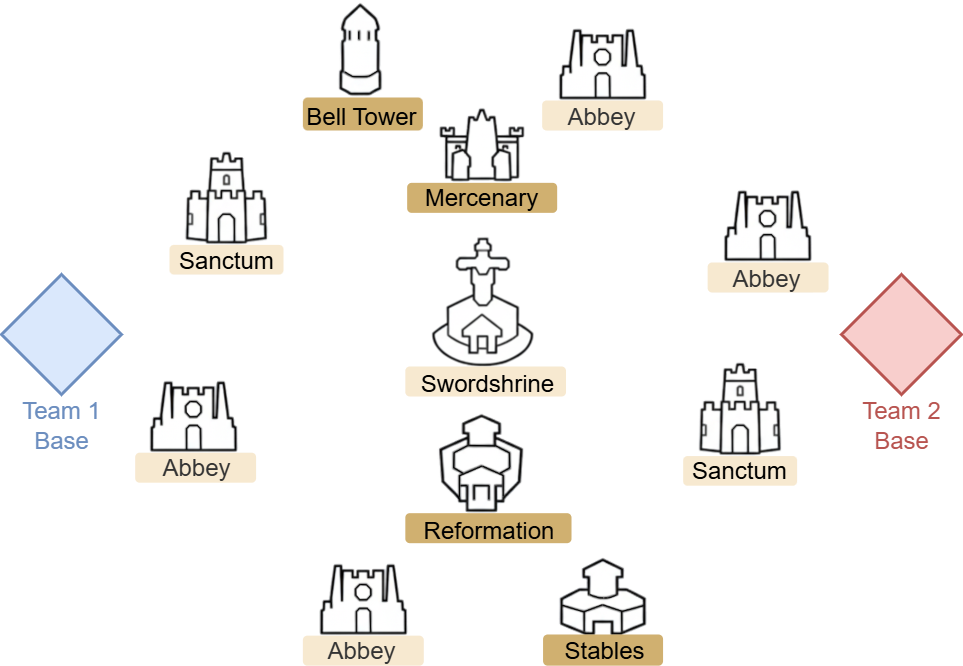

Buildings
| Name | First Control | Garrison Points | Effect |
|---|---|---|---|
| Swordshrine | 4500 | 900/min | Increase Relic Points |
| Sanctum | 3000 | 600/min | Increase Relic Points |
| Abbey | 1500 | 300/min | Increase Relic Points |
| Mercenary | 600 | 120/min | Send mercenaries to hit enemy buildings |
| Reformation | 600 | 120/min | 15% damage boost and reduction |
| Stables | 600 | 120/min | Reduce teleport cooldown by 50% |
| Bell Tower | 600 | 120/min | Speeds up building captures |
| Undercellars | - | 240/min | Gathering sites |
Alliance Points = Personal Points * 2
Phase 1 Map

Phase 1 Strategy
- Support team helps Defenders capture Belltower and Royal Stables.
- Attack team weakens enemy troops early on.
- Rotate roles after healing cooldown (12 minutes).
Phase 2 Map

Phase 2 Strategy
- Ignore Swordshrine initially—focus on Relic Point buildings.
- Split Defenders to hold Sanctums, Abbeys, and key buildings.
- Attackers continue pressure; Support fills gaps.
Phase 3 Map
Phase 3 Strategy
- Target Swordshrine in final 10 minutes for bonus points.
- Use coordinated rallies: Attack then Support.
- Teleport in a circle around the shrine to disrupt enemy.
Bonus Tips

Final Tips
- Only register active members to avoid matchmaking issues.
- Use labels to guide players during battle.
- Activate buffs, gear, and pet skills before battle starts.
- Hold Royal Stables to reduce teleport cooldown.
- Grab Undercellers for big point boosts when they appear.